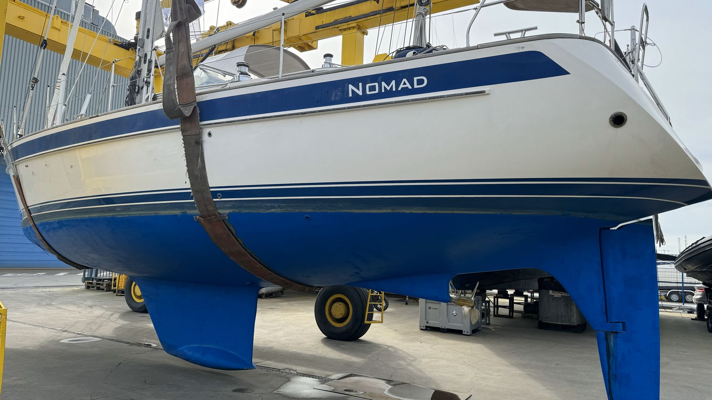
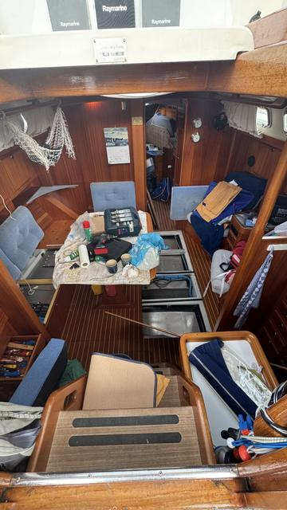
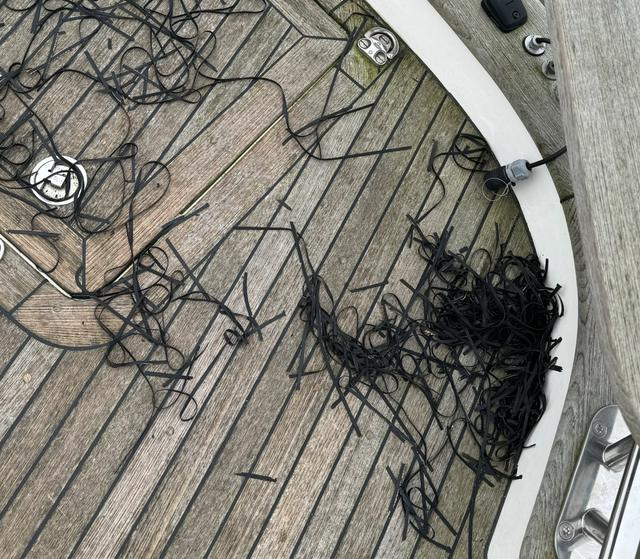
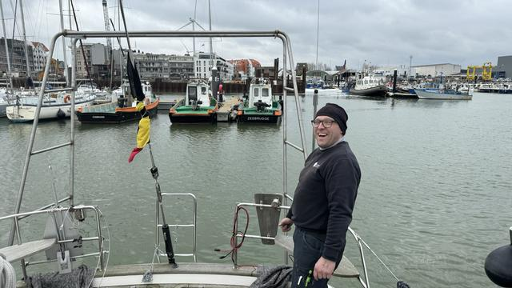

23 maart 2024
Upgrade-update
Nomad was altijd al een top-bootje, maar voor de Tournée Générale gaan we next level. De laatste maanden zijn vooral gespendeerd aan een paar essentiële verbeteringen en dat zal zo blijven duren tot aan het vertrek. Naast grotere upgrades, blijft ook het kleine / dagelijkse onderhoud een niet te onderschatten to-do.
Wat is er de afgelopen maanden allemaal veranderd?

- Alle elektronica is vernieuwd; nieuwe radar, VHF, wind-, diepte- en snelheidsmeter, AIS, plotter en instrumentenpanelen.
- We hebben een extra zeil: een splinternieuwe kotterfok, geplaatst door Wittevrongel in Blankenberge, inclusief wegneembare backstagen. Ideaal voor gebruik bij zwaarder weer.
- Veiligheid: alle zwemvesten zijn gereviseerd, er is een nieuw oceaanwaardig reddingsvlot voor 6 personen, nieuwe voorraad vuurpijlen en de grab bag is uitgebreid.
- Het dek is uitgebreid onder handen genomen: alle rubber naden zijn afgeschraapt (merci aan Vicky!), waar nodig nieuwe teak proppen en het dek is uitgebreid gereinigd. Het ziet er nog niet 100% uit zoals ik zou willen, maar al wel pakken beter dan een paar weken geleden.
- Loodgieterij en zo: beide scheepstoiletten, leidingen en pompen zijn grondig onderhouden (hmmm....), watertanks zijn langs binnen gereinigd.

Maar we zijn er nog niet helemaal... de komende maanden moeten er nog een paar grote werken gebeuren. Op 21 maart is de boot op de wal gegaan en wordt er aan de romp en onderwaterschip gewerkt. Dat wil zeggen:
- de romp wassen, polieren en waxen
- onderwaterschip schuren en opnieuw antifoulen
- schroef-onderhoud

En als Nomad dan eindelijk terug in het water ligt, volgen er nog een drietal grotere ingrepen:
- Monteren van de windvaan stuurinrichting op de spiegel; enfin toch een deel ervan, de rest wordt tijdens een tussenstop van etappe 1 in Guernsey opgehaald.
- Plaatsen van beugel om een maximaal aantal zonnepanelen, het nieuwe reddingsvlot, de Starlink en de Zodiac aan te hangen.
- Nieuw, zwaarder en sterker anker. De ankerketting blijft vermoedelijk dezelfde.
